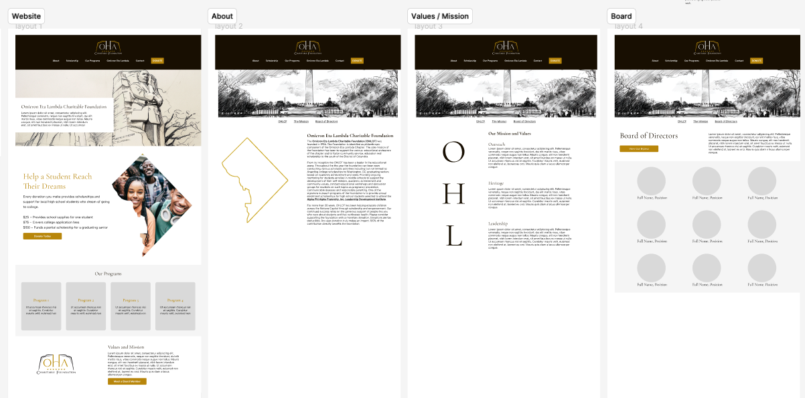
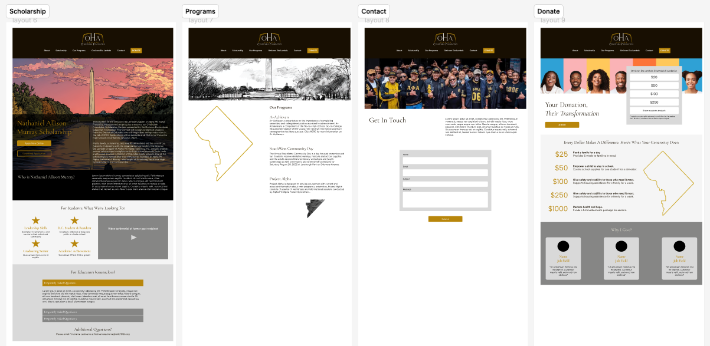

Overview
The problem
The Omicron Eta Lambda Charitable Foundation (OHLCF) operates with limited funding, relying heavily on one-time donations and small fundraising events. The current website does not collect recurring contributions. Because of this, OHLCF is unable to build sustained donor relationships and generate consistent funding.
The website does not reflect OHLCF's professionalism, character, and commitment to the D.C. community.
The organization does not have a designated logo.
Branding
Logo Design
Process
How I approached the web redesign
Consultation
Met with POC (Chairmam Board of Directors) to discuss vision, requirements, and necessary fuctionality for website.
Audit of current site
Reviewed site stucture, current voice and messaging. Noted inconsistencies in design. Reported broken links and pages.
Hi-fidelity wireframing
Presented new website mocks and prototype.
Images & Content
Generated pictures and refreshed text and language to showcase language with a purpose.
Selection of tech-pack
Researched web platforms with affordable CMS and hosting, within budget.
Vision
Web redesign objectives
#1
Present a strong, informative website that embodies the foundation’s community-driven values.
#2
Build awareness of OHLCF’s mission, scholarship, and programs to visitors.
#3
Strengthen donor relationships to increase recurring donations.
Wireframes
Moments in Figma


Wireframes of homepage and internal pages
Final Website